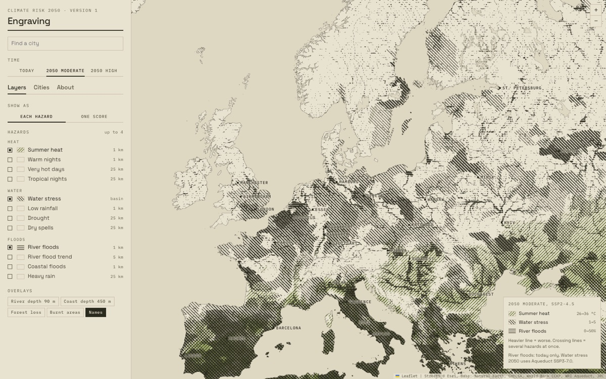
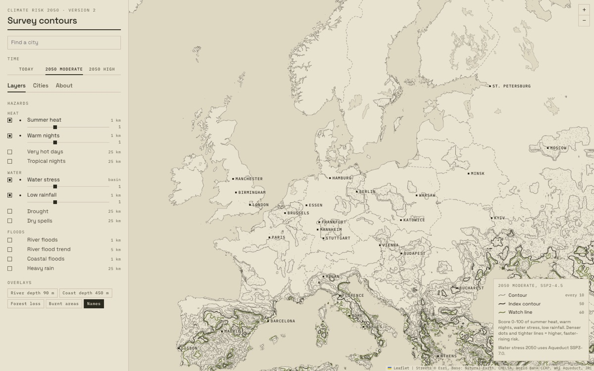
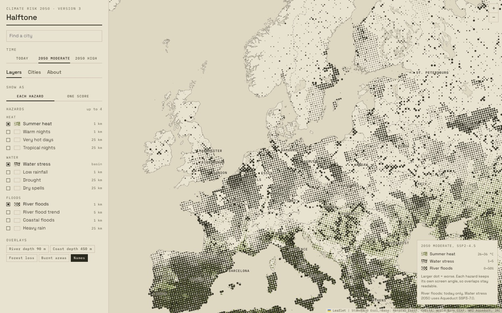
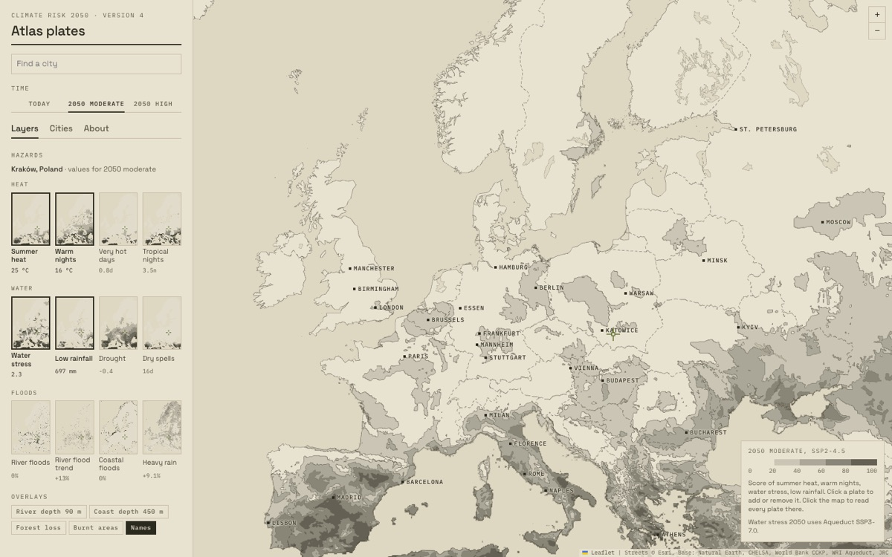
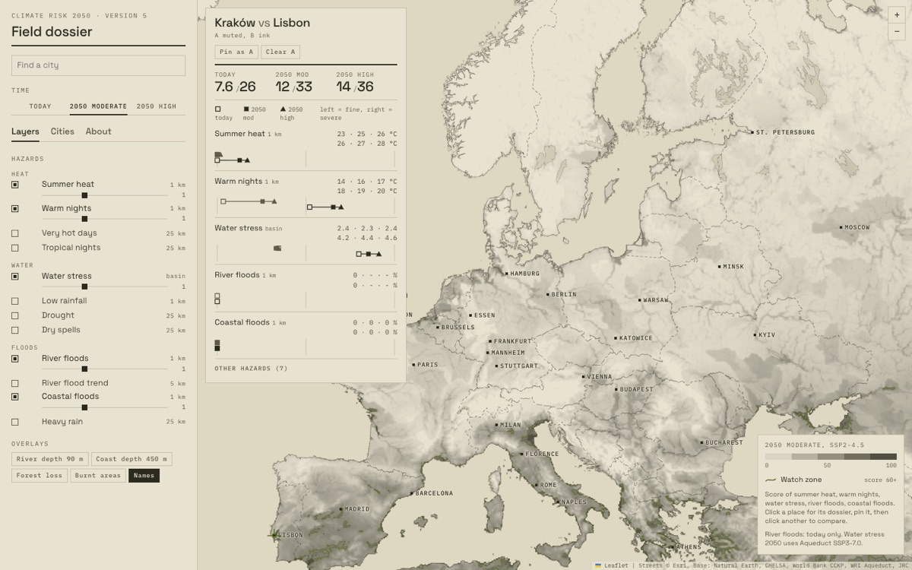
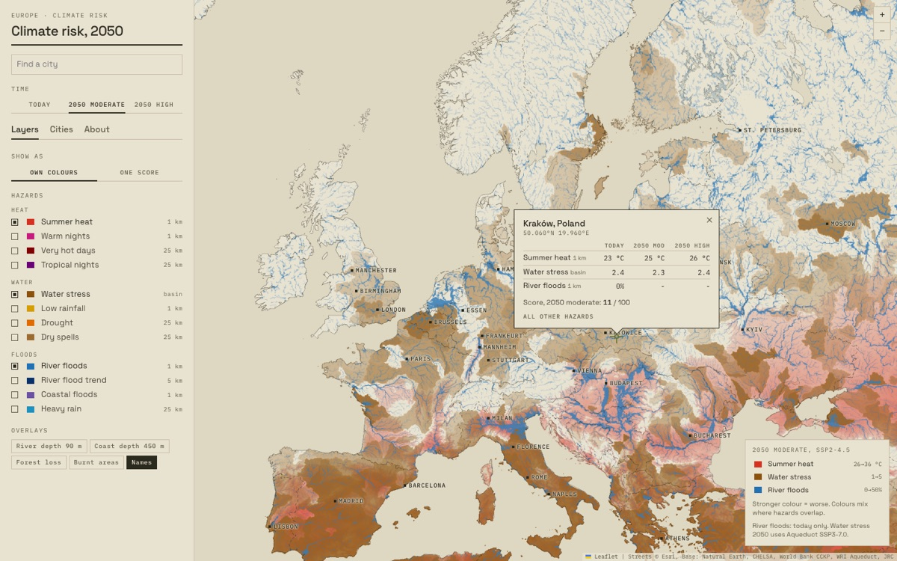

Same twelve hazards, same 1 km data. Only the drawing changes. Open each one, click a city you know, and keep the one that answers your question fastest.

Each hazard is line hatching at its own angle. A heavier line means a worse hazard. Where hazards overlap, the lines cross into a denser weave.
Best for seeing where two to four hazards meet, in one ink.

The combined score as a terrain: a contour every 10 points, a bold line every 50, and the olive line at 60 as the watch level.
Best for seeing where risk rises fast, like a steep slope, and where it stays flat.

Each hazard is a dot screen at its own print angle, as in four-colour printing. A bigger dot means a worse hazard. Overlaps form rosettes.
Best for comparing up to four hazards at a glance, without colours that mix into mud.

Twelve small maps, one per hazard, are the controls. The main map shows the score in five steps. Click a place, and every plate marks it and shows its value.
Best for the full profile of one place, and the big picture of each hazard.

A quiet map with one olive watch line, and a card for the place you click: each hazard as a range from today to 2050. Pin one place, click another, compare.
Best for choosing between two or three candidate cities.

The current map, cleaned up and on the same sand base map: a colour per hazard, or one score.
Best for people who expect a standard web map.